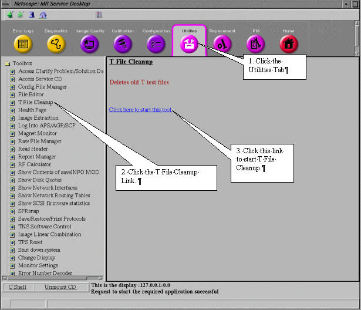
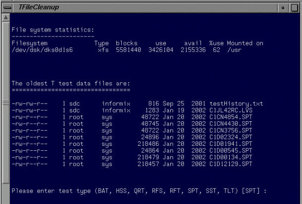
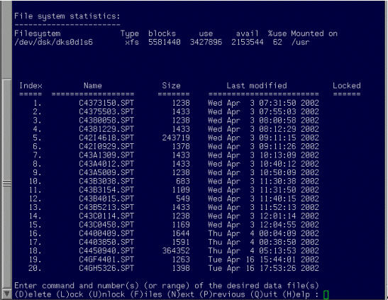
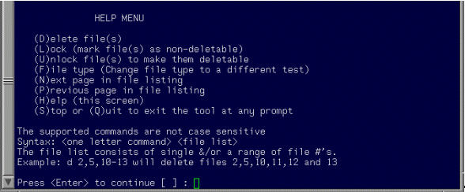

Operating Documentation
Direction 5440000, Rev# 5
Signa HDxt Service Methods
Module Version 1.0, Version Date 4/25/07
Operating Documentation |
To access T File Cleanup, click on the [Service Desktop] icon.
If it is not already running, start the Service Browser.
Click the [Utilities] tab.
Under Toolbox, select [T File Cleanup].
Select <Click here to start this tool>. See Illustration 1.
Illustration 2 shows the T File Cleanup Interface.
Illustration 1: Starting T File Cleanup from the Service Browser

Illustration 2: T File Cleanup Interface

Selecting the test type from the list of available types results in the display shown in Illustration 3. In this example the default test type SPT was selected. Help information is available for each of the listed commands by selecting <H>. See Illustration 4.
Illustration 3: T File Cleanup Selection Display

Illustration 4: T File Cleanup Help Menu
